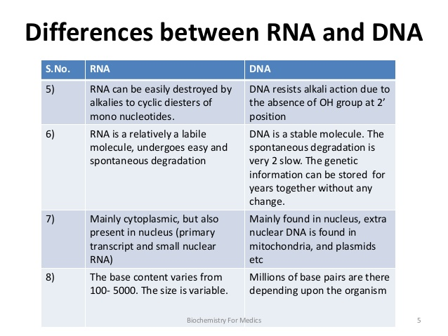
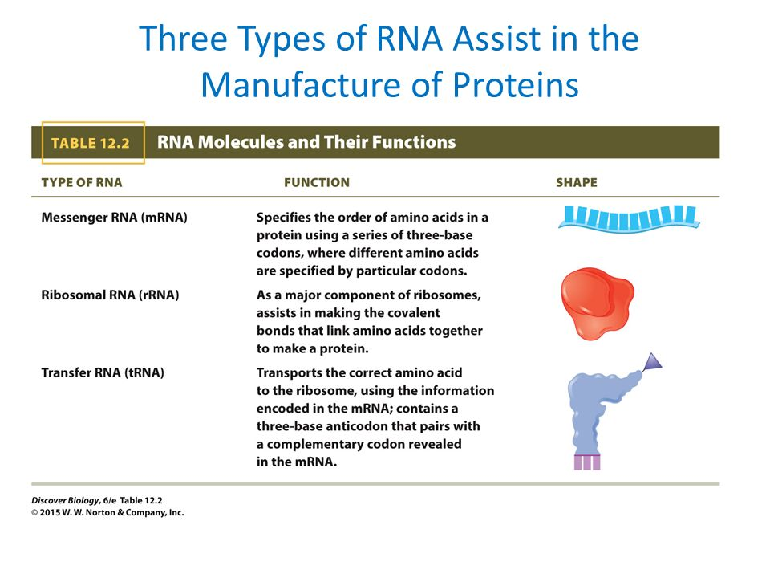
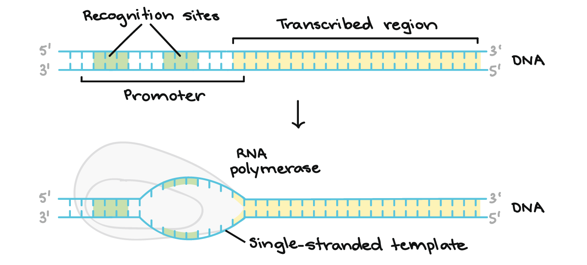
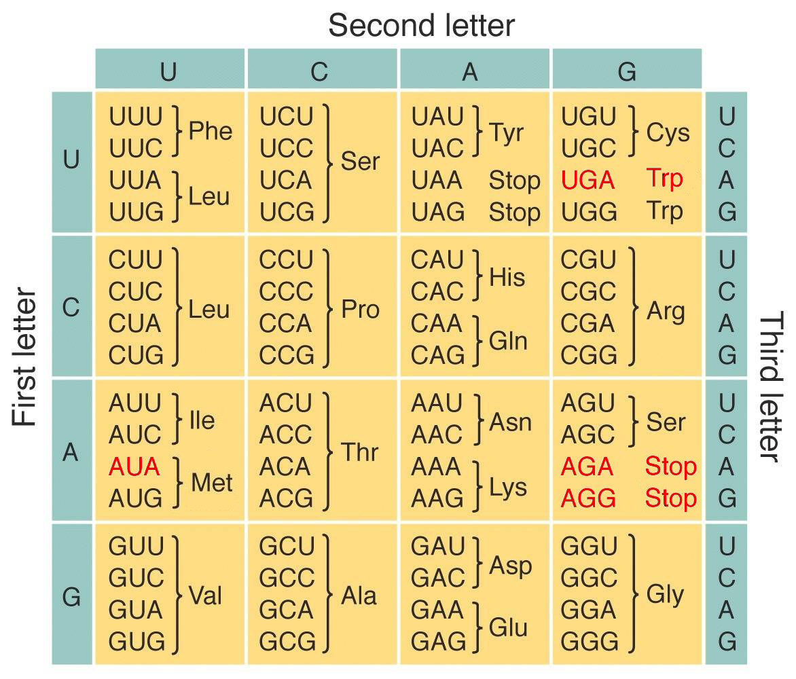
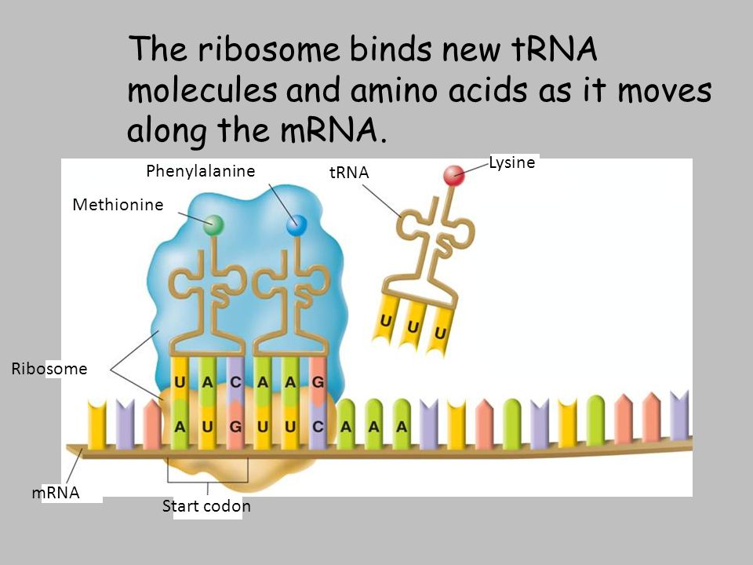
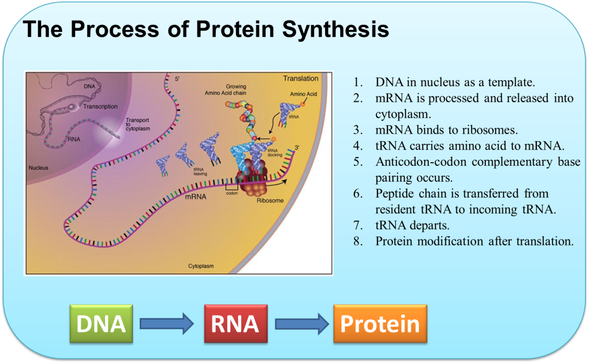
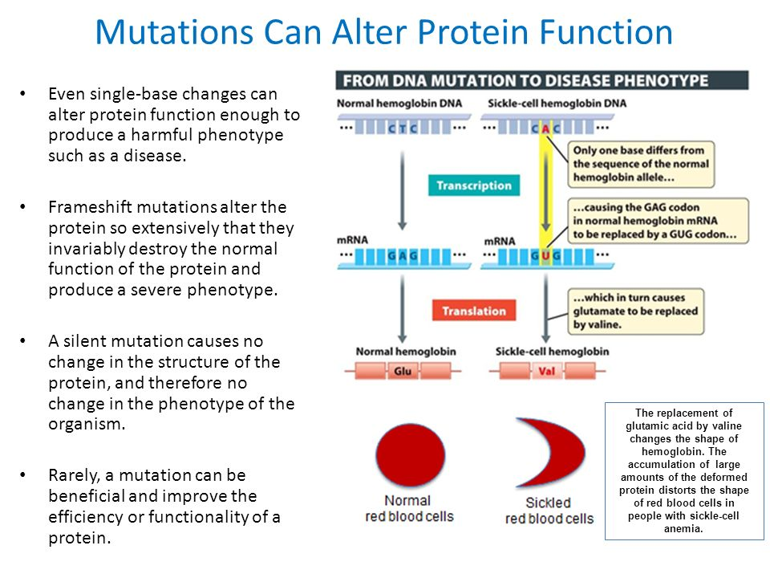
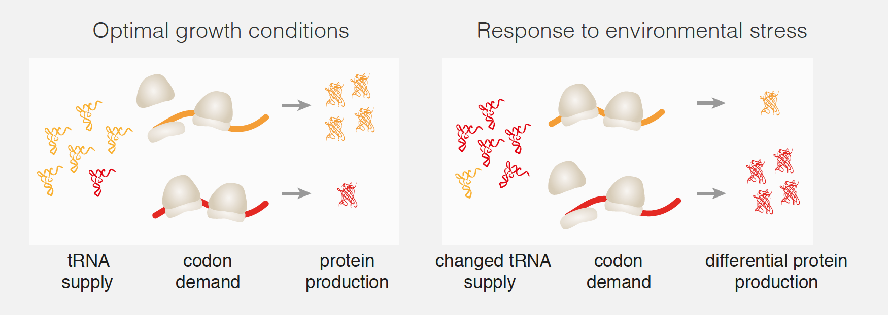

DNA/RNA
RNA molecules are single-stranded poly nucleotides
- Like DNA, RNA is a polymer of nucleotides
- RNA is single-stranded
- DNA and RNA also differ in the type of sugar used (ribose in RN, Deoxyribose in DNA)


Transcription: INformation flow from DNA to RNA
- Transcription begins when RNA polymerase binds to a segment of DNA called a gene promoter
- Once bound, RNA polymerase begins to unwind the DNA and transcribe the template strand (bottom strand in
in diagram); which strand serves as the template is dictated by the position of the promoter, which orients the polymerase.
- Transcription stops when RNA polymerase reaches a special sequence of baes called a terminator.

In eukaryotes, mRNA is chemically modified after transcription
- Posttranscriptional processing modifies RNA and prepares it for export from nucleus
- The newly formed mRNA underges RNA splicing, which removes the intron, and is then alled to leave the nucleus through the nuclear pore
Translation: infomration flow from mRNA to protein
- Translation is the process of converting a sequence of bases in mRNA to sequnce of amino acids in protien
- ...
The base sequence of mRNA is read as a sequence of codons
- Each unique sequence of thre bases is called a codon>
- When reading the code the reibsones begin at the start codon, AUG, and end at one of three stop codons: UAA, UAG, or UGA
There are 64 codons that make up the information in the genetic code
- The genetic code has several distinct charactersics
- It is unambiguous
- it is redundant
- It is virtually universal

After a ribosome bonds to the mRNA, each specific amino acis is delieverd to the ribosome-mRNA complex by
a tRNA molecule specialized to deliver a specific type of amino acid
- Each codon on the mRNA is recognized by a specific tRNA, and the ribosome adds the amino acid deliverd by tRNA to the
growing amino acid chain
- Anticodon


A mutation is a change in the base sequence of an individual's DNA
- insertion -
- deletion -
- substitution -
Mutation can alter protien function
- Even a single-base changes can alger protein function enough to produce a harmful phenotype such as a disease
- Rarely, a mutation cn be beneficial and imporve the efficiency or functionality of a protien

Insertion and deletion utations are ususally more disruptive than substitution mutations
- Insertion or deletion mutations occur when a base is inserted into or deleted from a DNA sequene
- Insertion or deletion of one or two nucleotides causes a frameshift mutation, which scrambles the dwonstream RNA transcription
- ...
How cells control gene expression
- Gene expression referes to the transcription and translatin of a gene to produce a functional protien that has an effect of phenotype
- Gene propoters are sections of a gene that function as an on/off swithc from transcription
- Gene expression changes during development and can change in response to enviornmental signals and internal signals such as hormones
In eukaryotes, different cell types express different sets of genes
- Different types of cells express diffent sets of genes depending on wheter that gene function is needed under the prevailing conidions
- Housekeeping genes play an essential role in the maintenance of cellular activities in all kinds of cells and have been highly conserved in
evolutionary
Most genes are controlled at the the transcriptional level
- Cells generally control gene expression by regulating the transcription of specifi genes
- Regulatory DNA is the part of a gene that controls gene transcriptin with the help of gene regulator protiens
- .....
Organisms can turn genes on or off in response to enviornmental cues
